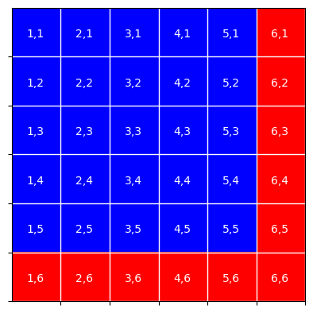

Chapter 6: Probability
Contents
Chapter 6: Probability#
import pandas as pd
import sidetable
import numpy as np
import matplotlib.pyplot as plt
import seaborn as sns
from scipy.stats import norm, binom
import rpy2.robjects as ro
from rpy2.robjects.packages import importr
from rpy2.robjects import pandas2ri
pandas2ri.activate()
from rpy2.robjects.conversion import localconverter
# import NHANES package
base = importr('NHANES')
with localconverter(ro.default_converter + pandas2ri.converter):
NHANES = ro.conversion.rpy2py(ro.r['NHANES'])
NHANES = NHANES.drop_duplicates(subset='ID')
NHANES['isChild'] = NHANES.Age < 18
NHANES_adult = NHANES.dropna(subset=['Height']).query('Age > 17')
rng = np.random.RandomState(123)
Figure 6.1#
fig, ax = plt.subplots(1, 2, figsize=(12,6))
nsamples = 30000
pDf = pd.DataFrame({'trial_number': list(range(1, nsamples + 1))})
pDf['outcomes'] = rng.binomial(1, .5, nsamples)
pDf['mean_probability'] = np.cumsum(pDf.outcomes) / pDf.trial_number
pDf = pDf.query('trial_number >= 10')
sns.lineplot(data=pDf, x='trial_number', y='mean_probability', ax=ax[0])
ax[0].plot([10, nsamples], [0.5, 0.5])
ax[0].set_xlabel("Number of trials")
ax[0].set_ylabel("Estimated probability of heads")
electionReturns = pd.read_csv('https://raw.githubusercontent.com/statsthinking21/statsthinking21-figures-data/main/03/alabama_election_returns.csv')
electionReturns = pd.melt(electionReturns, id_vars=['pctResp'],
var_name='Candidate', value_name='pctVotes')
sns.lineplot(data=electionReturns, x='pctResp', y='pctVotes', hue='Candidate', ax=ax[1])
ax[1].set_xlabel("Percentage of precincts reporting")
ax[1].set_ylabel("Percentage of votes")
Text(0, 0.5, 'Percentage of votes')
Figure 6.2#
imgmtx = np.zeros((6, 6))
imgmtx[:, -1] = 1
imgmtx[-1, :] = 1
plt.imshow(imgmtx, cmap='bwr')
plt.xticks(np.arange(0.5, 6))
plt.yticks(np.arange(0.5, 6))
plt.grid(color='white', linestyle='-', linewidth=1, which='major')
for i in range(0, 6):
for j in range(0, 6):
plt.annotate(f'{i+1},{j+1}', [i-0.2, j+0.1], color='white')
plt.setp(plt.gca().get_xticklabels(), visible=False)
_ = plt.setp(plt.gca().get_yticklabels(), visible=False)

Table 6.1#
curry_df = pd.DataFrame({'numSuccesses': list(range(0, 5))})
curry_df['Probability'] = binom.pmf(curry_df.numSuccesses, 4, 0.91)
curry_df['CumulativeProbability'] = binom.cdf(curry_df.numSuccesses, 4, 0.91)
curry_df
| numSuccesses | Probability | CumulativeProbability | |
|---|---|---|---|
| 0 | 0 | 0.000066 | 0.000066 |
| 1 | 1 | 0.002654 | 0.002719 |
| 2 | 2 | 0.040246 | 0.042965 |
| 3 | 3 | 0.271286 | 0.314250 |
| 4 | 4 | 0.685750 | 1.000000 |
Table 6.2#
NHANES_diabetes_activity = NHANES_adult[['PhysActive', 'Diabetes']].dropna()
diabetes_summary = pd.DataFrame(NHANES_diabetes_activity.value_counts('Diabetes'), columns=['counts'])
diabetes_summary['prob'] = diabetes_summary.counts / NHANES_diabetes_activity.shape[0]
print(diabetes_summary)
activity_summary = pd.DataFrame(NHANES_diabetes_activity.value_counts('PhysActive'), columns=['counts'])
activity_summary['prob'] = activity_summary.counts / NHANES_diabetes_activity.shape[0]
print(activity_summary)
counts prob
Diabetes
No 4251 0.887659
Yes 538 0.112341
counts prob
PhysActive
Yes 2456 0.512842
No 2333 0.487158
Table 6.3#
NHANES_diabetes_stats_by_activity = pd.DataFrame(
NHANES_diabetes_activity.value_counts(['Diabetes', 'PhysActive']), columns=['counts'])
NHANES_diabetes_stats_by_activity['prob'] = NHANES_diabetes_stats_by_activity / NHANES_diabetes_activity.shape[0]
NHANES_diabetes_stats_by_activity
| counts | prob | ||
|---|---|---|---|
| Diabetes | PhysActive | ||
| No | Yes | 2261 | 0.472124 |
| No | 1990 | 0.415536 | |
| Yes | No | 343 | 0.071622 |
| Yes | 195 | 0.040718 |
Table 6.4#
NHANES_mh = NHANES_adult.dropna(subset=['PhysActive', 'DaysMentHlthBad'])
NHANES_mh['badMentalHealth'] = [
'Bad Mental Health' if i > 7 else "Good Mental Health" for i in NHANES_mh.DaysMentHlthBad]
NHANES_mentalhealth_by_physactive_counts = pd.crosstab(
NHANES_mh.PhysActive,
NHANES_mh.badMentalHealth,
margins = True, normalize='all')
NHANES_mentalhealth_by_physactive_counts
| badMentalHealth | Bad Mental Health | Good Mental Health | All |
|---|---|---|---|
| PhysActive | |||
| No | 0.085177 | 0.402088 | 0.487265 |
| Yes | 0.060543 | 0.452192 | 0.512735 |
| All | 0.145720 | 0.854280 | 1.000000 |
Table 6.5#
NHANES_mentalhealth_by_physactive_condp = pd.crosstab(
NHANES_mh.PhysActive,
NHANES_mh.badMentalHealth,
margins = True, normalize='index')
NHANES_mentalhealth_by_physactive_condp
| badMentalHealth | Bad Mental Health | Good Mental Health |
|---|---|---|
| PhysActive | ||
| No | 0.174807 | 0.825193 |
| Yes | 0.118078 | 0.881922 |
| All | 0.145720 | 0.854280 |